Changes in PRIMAP-hist v2.5.1_final compared to v2.5_final for Sweden
2024-02-29
Johannes Gütschow
Change analysis for Sweden for PRIMAP-hist v2.5.1_final compared to v2.5_final
Overview over emissions by sector and gas
The following figures show the aggregate national total emissions excluding LULUCF AR6GWP100 for the country reported priority scenario. The dotted linesshow the v2.5_final data.
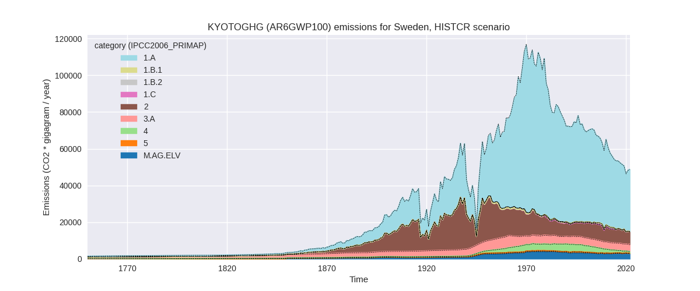
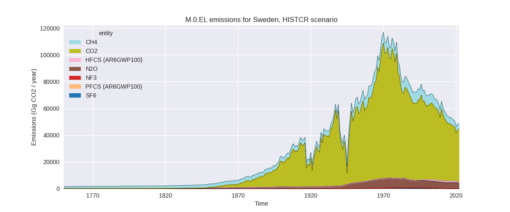
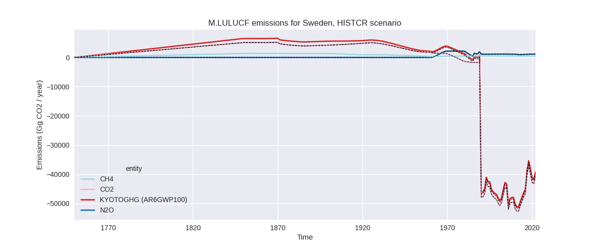
The following figures show the aggregate national total emissions excluding LULUCF AR6GWP100 for the third party priority scenario. The dotted linesshow the v2.5_final data.
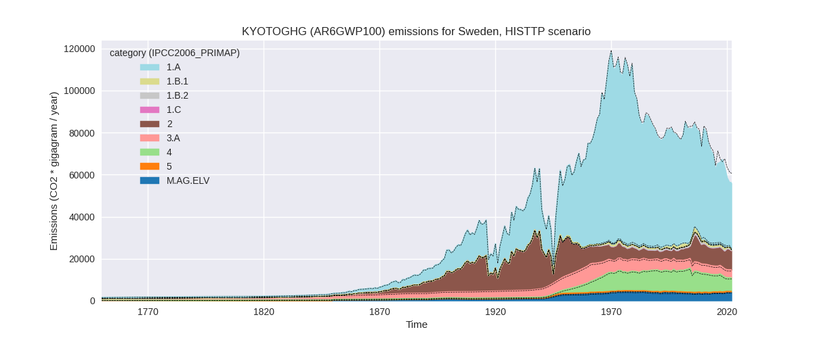
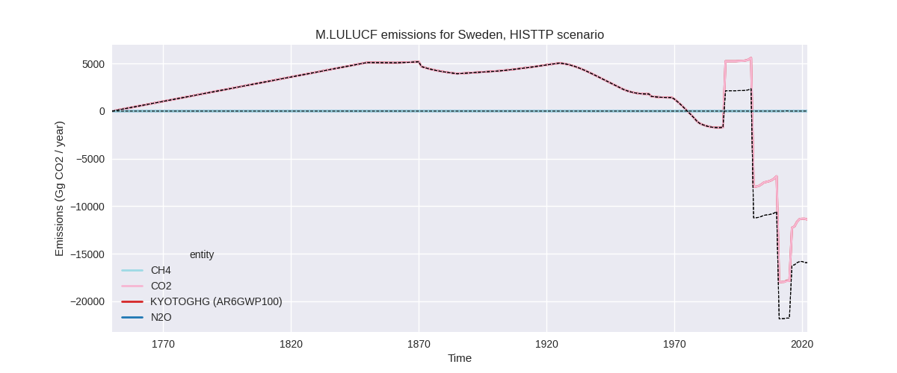
Overview over changes
In the country reported priority scenario we have the following changes for aggregate Kyoto GHG and national total emissions excluding LULUCF (M.0.EL):
- Emissions in 2022 have changed by 0.3%% (142.76 Gg CO2 / year)
- Emissions in 1990-2022 have changed by 0.0%% (4.33 Gg CO2 / year)
In the third party priority scenario we have the following changes for aggregate Kyoto GHG and national total emissions excluding LULUCF (M.0.EL):
- Emissions in 2022 have changed by -7.4%% (-4508.85 Gg CO2 / year)
- Emissions in 1990-2022 have changed by -2.3%% (-1731.74 Gg CO2 / year)
Most important changes per scenario and time frame
In the country reported priority scenario the following sector-gas combinations have the highest absolute impact on national total KyotoGHG (AR6GWP100) emissions in 2022 (top 5):
- 1: 4, CH4 with 196.36 Gg CO2 / year (43.5%)
- 2: 2, CO2 with -96.77 Gg CO2 / year (-1.7%)
- 3: 1.A, CH4 with 39.63 Gg CO2 / year (22.5%)
- 4: 1.A, N2O with -19.31 Gg CO2 / year (-3.4%)
- 5: 5, N2O with 17.68 Gg CO2 / year (8.9%)
In the country reported priority scenario the following sector-gas combinations have the highest absolute impact on national total KyotoGHG (AR6GWP100) emissions in 1990-2022 (top 5):
- 1: 4, CH4 with 5.95 Gg CO2 / year (0.3%)
- 2: 2, CO2 with -2.93 Gg CO2 / year (-0.0%)
- 3: 1.A, CH4 with 1.20 Gg CO2 / year (0.5%)
- 4: 1.A, N2O with -0.59 Gg CO2 / year (-0.1%)
- 5: 5, N2O with 0.54 Gg CO2 / year (0.1%)
In the third party priority scenario the following sector-gas combinations have the highest absolute impact on national total KyotoGHG (AR6GWP100) emissions in 2022 (top 5):
- 1: 1.A, CO2 with -4260.71 Gg CO2 / year (-12.5%)
- 2: 2, CO2 with -1651.88 Gg CO2 / year (-30.0%)
- 3: 2, N2O with 914.49 Gg CO2 / year (27.6%)
- 4: M.AG.ELV, N2O with 703.25 Gg CO2 / year (20.2%)
- 5: 1.B.1, CO2 with 182.78 Gg CO2 / year (68.0%)
In the third party priority scenario the following sector-gas combinations have the highest absolute impact on national total KyotoGHG (AR6GWP100) emissions in 1990-2022 (top 5):
- 1: 2, CO2 with -1269.92 Gg CO2 / year (-26.0%)
- 2: 1.A, CO2 with -621.65 Gg CO2 / year (-1.3%)
- 3: M.AG.ELV, N2O with 540.85 Gg CO2 / year (17.0%)
- 4: 1.B.2, CH4 with -228.26 Gg CO2 / year (-80.9%)
- 5: 1.B.1, CO2 with -99.44 Gg CO2 / year (-9.3%)
Notes on data changes
Here we list notes explaining important emissions changes for the country. ’' means that the following text only applies to the TP time series, while means that it only applies to the CR scenario. Otherwise the note applies to both scenarios.
- 1.A, CO2: CDIAC 2023 shows a stronger decline in emissions in 2019 and 2020 than EI 2023 leading to lower emissions in PRIMAP-hist.
Changes by sector and gas
For each scenario and time frame the changes are displayed for all individual sectors and all individual gases. In the sector plot we use aggregate Kyoto GHGs in AR6GWP100. In the gas plot we usenational total emissions without LULUCF. ## country reported scenario
2022
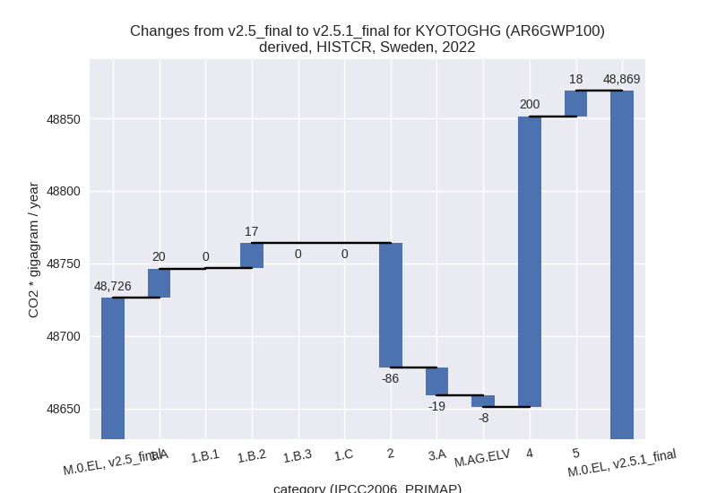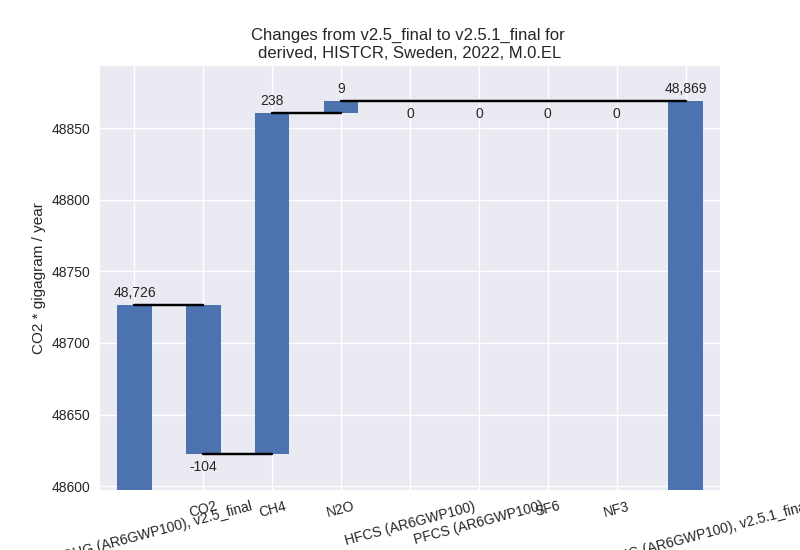
1990-2022
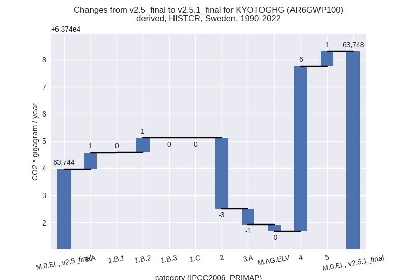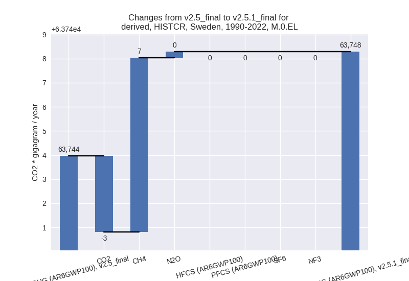
third party scenario
2022
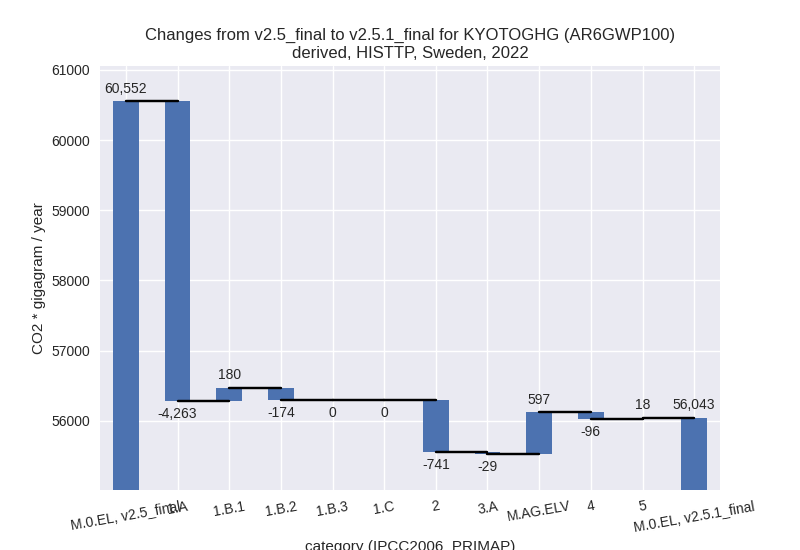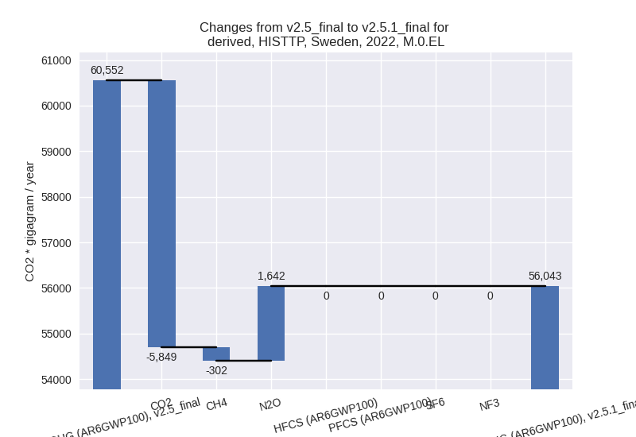
1990-2022
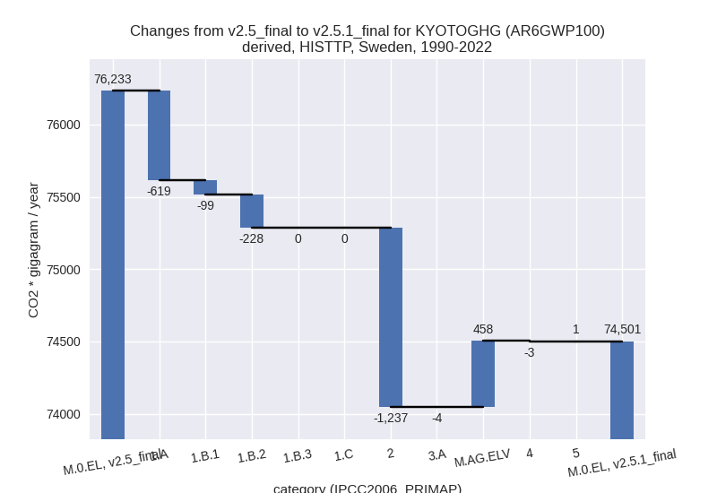
Detailed changes for the scenarios:
country reported scenario (HISTCR):
Most important changes per time frame
For 2022 the following sector-gas combinations have the highest absolute impact on national total KyotoGHG (AR6GWP100) emissions in 2022 (top 5):
- 1: 4, CH4 with 196.36 Gg CO2 / year (43.5%)
- 2: 2, CO2 with -96.77 Gg CO2 / year (-1.7%)
- 3: 1.A, CH4 with 39.63 Gg CO2 / year (22.5%)
- 4: 1.A, N2O with -19.31 Gg CO2 / year (-3.4%)
- 5: 5, N2O with 17.68 Gg CO2 / year (8.9%)
For 1990-2022 the following sector-gas combinations have the highest absolute impact on national total KyotoGHG (AR6GWP100) emissions in 1990-2022 (top 5):
- 1: 4, CH4 with 5.95 Gg CO2 / year (0.3%)
- 2: 2, CO2 with -2.93 Gg CO2 / year (-0.0%)
- 3: 1.A, CH4 with 1.20 Gg CO2 / year (0.5%)
- 4: 1.A, N2O with -0.59 Gg CO2 / year (-0.1%)
- 5: 5, N2O with 0.54 Gg CO2 / year (0.1%)
Changes in the main sectors for aggregate KyotoGHG (AR6GWP100) are
- 1: Total sectoral emissions in 2022 are 33929.05 Gg CO2 / year which is 69.4% of M.0.EL emissions. 2022 Emissions have changed by 0.1% (37.79 Gg CO2 / year). 1990-2022 Emissions have changed by 0.0% (1.15 Gg CO2 / year).
- 2: Total sectoral emissions in 2022 are 6962.40 Gg CO2 / year which is 14.2% of M.0.EL emissions. 2022 Emissions have changed by -1.2% (-85.65 Gg CO2 / year). 1990-2022 Emissions have changed by -0.0% (-2.60 Gg CO2 / year).
- M.AG: Total sectoral emissions in 2022 are 6768.76 Gg CO2 / year which is 13.9% of M.0.EL emissions. 2022 Emissions have changed by -0.4% (-27.34 Gg CO2 / year). 1990-2022 Emissions have changed by -0.0% (-0.83 Gg CO2 / year).
- 4: Total sectoral emissions in 2022 are 992.04 Gg
CO2 / year which is 2.0% of M.0.EL emissions. 2022 Emissions have
changed by 25.3% (200.29 Gg CO2 /
year). 1990-2022 Emissions have changed by 0.2% (6.07 Gg CO2 / year). For 2022 the
changes per gas
are:
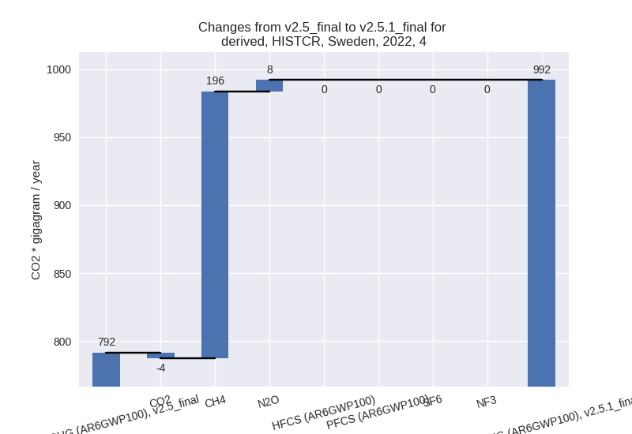 - 5: Total sectoral emissions in 2022 are 216.74 Gg
CO2 / year which is 0.4% of M.0.EL emissions. 2022 Emissions have
changed by 8.9% (17.68 Gg CO2 /
year). 1990-2022 Emissions have changed by 0.1% (0.54 Gg CO2 / year). For 2022 the
changes per gas
are:
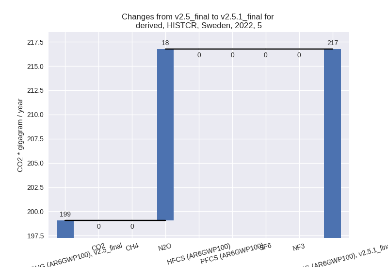
third party scenario (HISTTP):
Most important changes per time frame
For 2022 the following sector-gas combinations have the highest absolute impact on national total KyotoGHG (AR6GWP100) emissions in 2022 (top 5):
- 1: 1.A, CO2 with -4260.71 Gg CO2 / year (-12.5%)
- 2: 2, CO2 with -1651.88 Gg CO2 / year (-30.0%)
- 3: 2, N2O with 914.49 Gg CO2 / year (27.6%)
- 4: M.AG.ELV, N2O with 703.25 Gg CO2 / year (20.2%)
- 5: 1.B.1, CO2 with 182.78 Gg CO2 / year (68.0%)
For 1990-2022 the following sector-gas combinations have the highest absolute impact on national total KyotoGHG (AR6GWP100) emissions in 1990-2022 (top 5):
- 1: 2, CO2 with -1269.92 Gg CO2 / year (-26.0%)
- 2: 1.A, CO2 with -621.65 Gg CO2 / year (-1.3%)
- 3: M.AG.ELV, N2O with 540.85 Gg CO2 / year (17.0%)
- 4: 1.B.2, CH4 with -228.26 Gg CO2 / year (-80.9%)
- 5: 1.B.1, CO2 with -99.44 Gg CO2 / year (-9.3%)
Changes in the main sectors for aggregate KyotoGHG (AR6GWP100) are
- 1: Total sectoral emissions in 2022 are 32134.29 Gg
CO2 / year which is 57.3% of M.0.EL emissions. 2022 Emissions have
changed by -11.7% (-4256.55 Gg CO2 /
year). 1990-2022 Emissions have changed by -1.9% (-946.78 Gg CO2 / year). For 2022
the changes per gas
are:
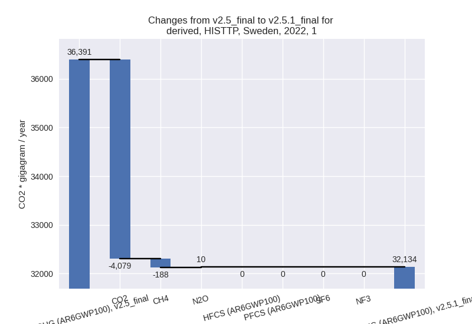
The changes come from the following subsectors:- 1.A: Total sectoral emissions in 2022 are 31567.39
Gg CO2 / year which is 98.2% of category 1 emissions. 2022 Emissions
have changed by -11.9% (-4263.39 Gg
CO2 / year). 1990-2022 Emissions have changed by -1.3% (-619.04 Gg CO2 / year). For 2022
the changes per gas
are:
There is no subsector information available in PRIMAP-hist. - 1.B.1: Total sectoral emissions in 2022 are 487.80
Gg CO2 / year which is 1.5% of category 1 emissions. 2022 Emissions have
changed by 58.7% (180.40 Gg CO2 /
year). 1990-2022 Emissions have changed by -9.0% (-99.47 Gg CO2 / year). For 2022 the
changes per gas
are:
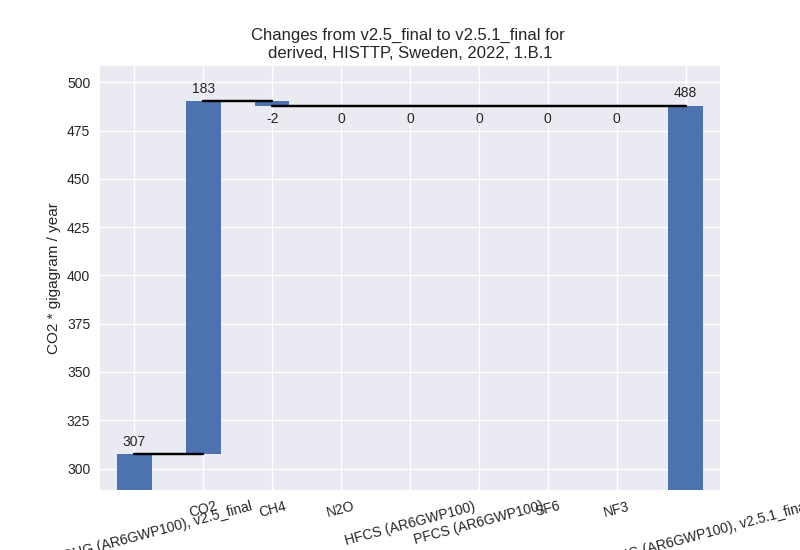
For 1990-2022 the changes per gas are:
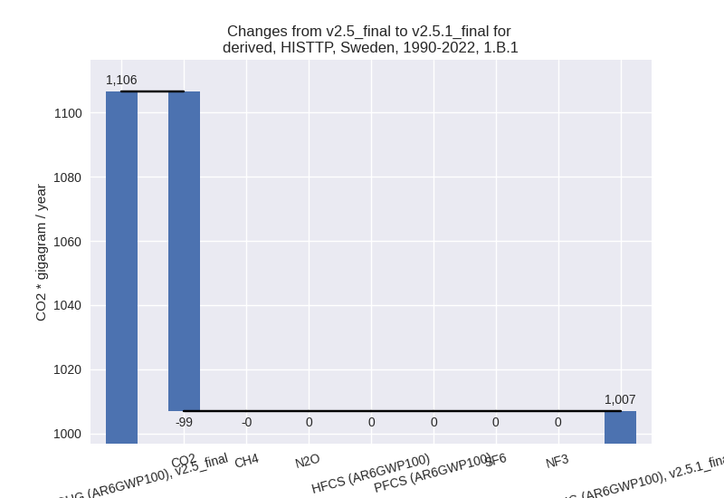
There is no subsector information available in PRIMAP-hist. - 1.B.2: Total sectoral emissions in 2022 are 79.10
Gg CO2 / year which is 0.2% of category 1 emissions. 2022 Emissions have
changed by -68.7% (-173.56 Gg CO2 /
year). 1990-2022 Emissions have changed by -80.8% (-228.28 Gg CO2 / year). For 2022
the changes per gas
are:
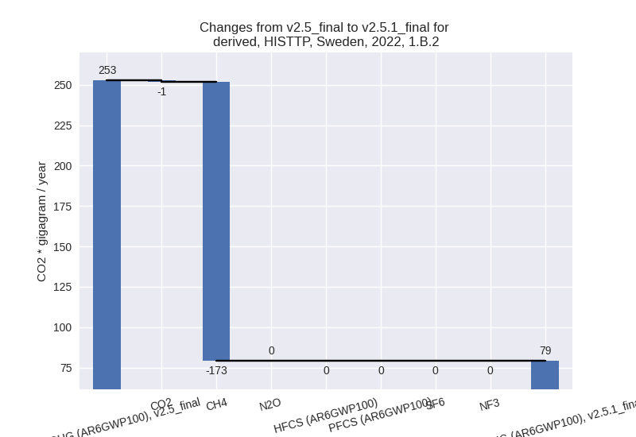
For 1990-2022 the changes per gas are:
There is no subsector information available in PRIMAP-hist.
- 1.A: Total sectoral emissions in 2022 are 31567.39
Gg CO2 / year which is 98.2% of category 1 emissions. 2022 Emissions
have changed by -11.9% (-4263.39 Gg
CO2 / year). 1990-2022 Emissions have changed by -1.3% (-619.04 Gg CO2 / year). For 2022
the changes per gas
are:
- 2: Total sectoral emissions in 2022 are 9253.26 Gg
CO2 / year which is 16.5% of M.0.EL emissions. 2022 Emissions have
changed by -7.4% (-741.42 Gg CO2 /
year). 1990-2022 Emissions have changed by -13.8% (-1237.15 Gg CO2 / year). For 2022
the changes per gas
are:
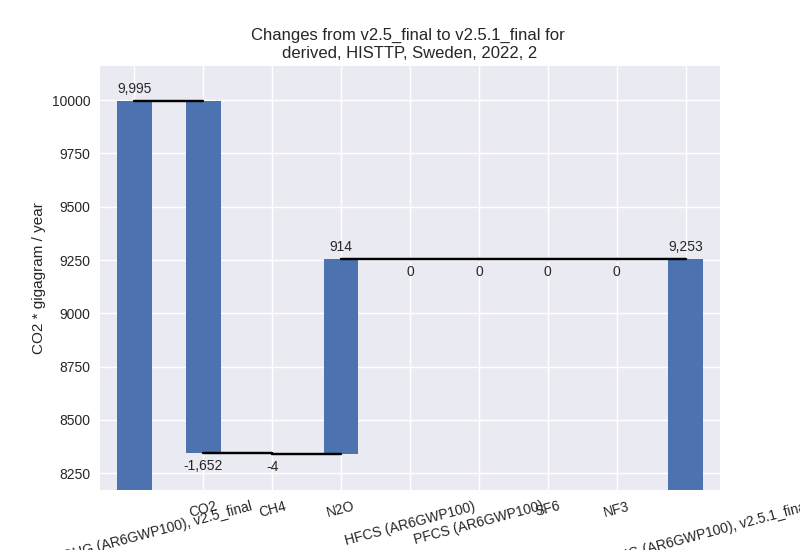
For 1990-2022 the changes per gas are:
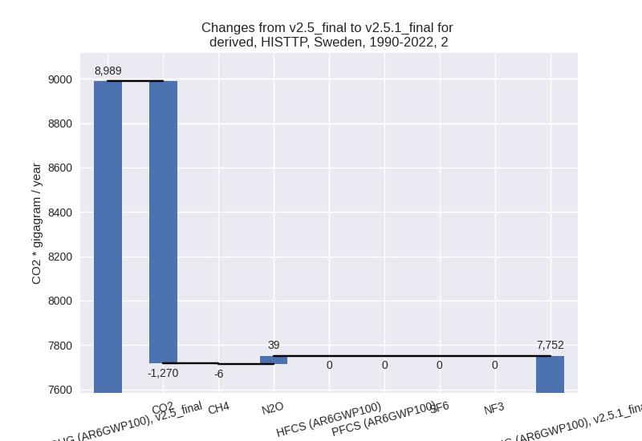 - M.AG: Total sectoral emissions in 2022 are 7983.62
Gg CO2 / year which is 14.2% of M.0.EL emissions. 2022 Emissions have
changed by 7.7% (567.59 Gg CO2 /
year). 1990-2022 Emissions have changed by 5.8% (454.57 Gg CO2 / year). For 2022 the
changes per gas
are:
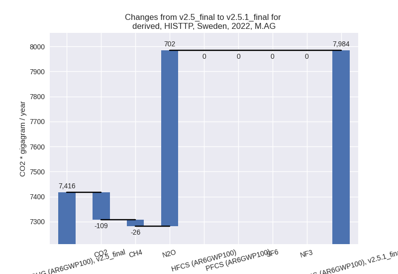
For 1990-2022 the changes per gas are:
The changes come from the following subsectors:- 3.A: Total sectoral emissions in 2022 are 3766.84 Gg CO2 / year which is 47.2% of category M.AG emissions. 2022 Emissions have changed by -0.8% (-29.03 Gg CO2 / year). 1990-2022 Emissions have changed by -0.1% (-3.64 Gg CO2 / year).
- M.AG.ELV: Total sectoral emissions in 2022 are
4216.78 Gg CO2 / year which is 52.8% of category M.AG emissions. 2022
Emissions have changed by 16.5%
(596.62 Gg CO2 / year). 1990-2022 Emissions have changed by 13.8% (458.21 Gg CO2 / year). For 2022 the
changes per gas
are:
For 1990-2022 the changes per gas are:
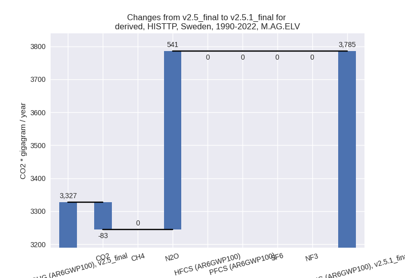
There is no subsector information available in PRIMAP-hist.
- 4: Total sectoral emissions in 2022 are 6454.97 Gg CO2 / year which is 11.5% of M.0.EL emissions. 2022 Emissions have changed by -1.5% (-96.16 Gg CO2 / year). 1990-2022 Emissions have changed by -0.0% (-2.91 Gg CO2 / year).
- 5: Total sectoral emissions in 2022 are 216.74 Gg
CO2 / year which is 0.4% of M.0.EL emissions. 2022 Emissions have
changed by 8.9% (17.68 Gg CO2 /
year). 1990-2022 Emissions have changed by 0.1% (0.54 Gg CO2 / year). For 2022 the
changes per gas
are: